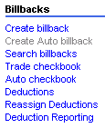

Blacksmith Applications, www.blacksmithapps.com
The options you see under Billbacks may differ, depending on your implementation.

Create Auto billback
Auto checkbook -
When you select Auto Checkbook, a page displays showing any active and inactive checkbook entries. Click the [add auto checkbook entry] link to create a new auto checkbook entry: the Add Auto Checkbook page displays.
Click the [Search for a Customer] link to display the customer search; click the [Search for a Program] link to search for a Program.
If you select a customer for whom there are no programs. you are prompted to start over. Once you've selected a customer and program, the system creates and displays a row with the Customer, Program, and your email address. A delete link is include so that you can remove the row.
Reassign Deductions -
When you select the Reassign Deductions link, a page displays on which you can select a currently assigned analyst and deduction status (new, open, etc.) from the left pane.
The deductions of that type assigned to that analyst display, and you can select some or all deductions, and use the links at the page bottom ( [import selected deductions] [undo selections] [ back to reassign deductions].
Then, select an analyst from the right pane to whom you want to reassign that analyst's selected deductions.
Deduction Reporting -
When you select the Deduction Reporting link, the Advanced Deductions Search page displays. Note the little triangle in the upper left next to "Hide" that allows you to toggle the display of the search fields on and off.
Search fields - (Deduction-related) Deduction Number, Check #, Amount $, Deduction Date:, Aging:, Status, Deduction Analyst, Current Action, Reason code
(Customer-related) Sold To, Broker, Family, Bill To
(Geographic location-related) Zone, Region, Market, Line of Business
Once you've made your selection, click [build report]. The report results display, with the search screen fields minimized and the search criteria that were used in a small box that can also be hidden (using the triangle labeled Hide Criteria Used).
The deductions that meet your search criteria are listed in summarized form in the lower section of the page, with links for the following: [detailed view] [export data] [email] [fax] [print]
The [detailed view] link expands each deduction so you can see all the details of the deduction. The link changes to say [summary view] so that you can return to the summary.
The [export data] link exports the deductions data to an excel file called DeductionData.csv.
The [email] link allows you to send this deduction report to anyone on your email list.